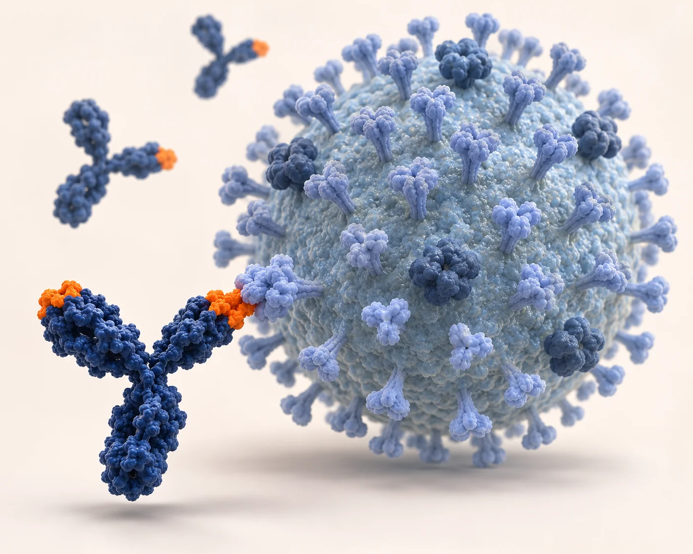

H1N1 mAbs
Mouse monoclonal antibodies for H1N1-focused research and diagnostic applications.
- Host
- Mouse
- Antibody type
- Monoclonal antibody (mAb)
- Select by
- Target protein, clone, strain reactivity, tested application and format

CATALOG PRODUCTS · MOUSE MONOCLONAL ANTIBODIES
Browse mAbs for H1N1, H3N2 and H5N1. Start with the virus subtype, then select by target protein, strain reactivity and intended application.

INFLUENZA A VIRUS mAb CATALOG
Explore the product family relevant to your target virus.
Mouse monoclonal antibodies for H1N1-focused research and diagnostic applications.
Mouse monoclonal antibodies for H3N2-focused research and diagnostic applications.
Mouse monoclonal antibodies for H5N1-focused research and diagnostic applications.
FIND YOUR REAGENT
Tell us the protein or antigen you want to detect, your virus strain, assay format and required quantity. We can help identify a catalog antibody and provide product information and a quotation.
| Selection field | What to review |
|---|---|
| Subtype | H1N1, H3N2 or H5N1. |
| Target & identity | Target protein, catalog number and clone ID. |
| Strain reactivity | Binding specificity and documented strain or cross-reactivity information. |
| Application | Product-specific evidence for the intended method, such as ELISA, lateral flow or immunoblotting. |
| Format & supply | Concentration, buffer, pack size, storage, price and lead time. |
Explore custom mouse mAb and rabbit pAb development, application-specific screening, characterization and production services.